Activities & Workshops
Technical talks, hands-on learning, and professional development.
Oct 15–16
2026
2026
October 15–16, 2026
01 / EVENT PORTRAIT 02 / BUILDING TOGETHER 
03 / U HACKATHON 04 / EVENT BRIEFING 
05 / JUDGES 06 / SPONSORS 
07 / CERTIFICATE
U Hackathon
FLOW SUMMIT 2026 · Track 1 AI-Assisted Development · Application Prototyping · Software Engineering- Participating in Track 1, an open-ended hackathon challenge focused on building an application using AI.
- Exploring AI tools to support idea development, coding, and application prototyping.
- Applying software engineering knowledge to translate an initial concept into an application.
- Gaining hands-on experience in AI-assisted development while working within the hackathon’s time constraints.
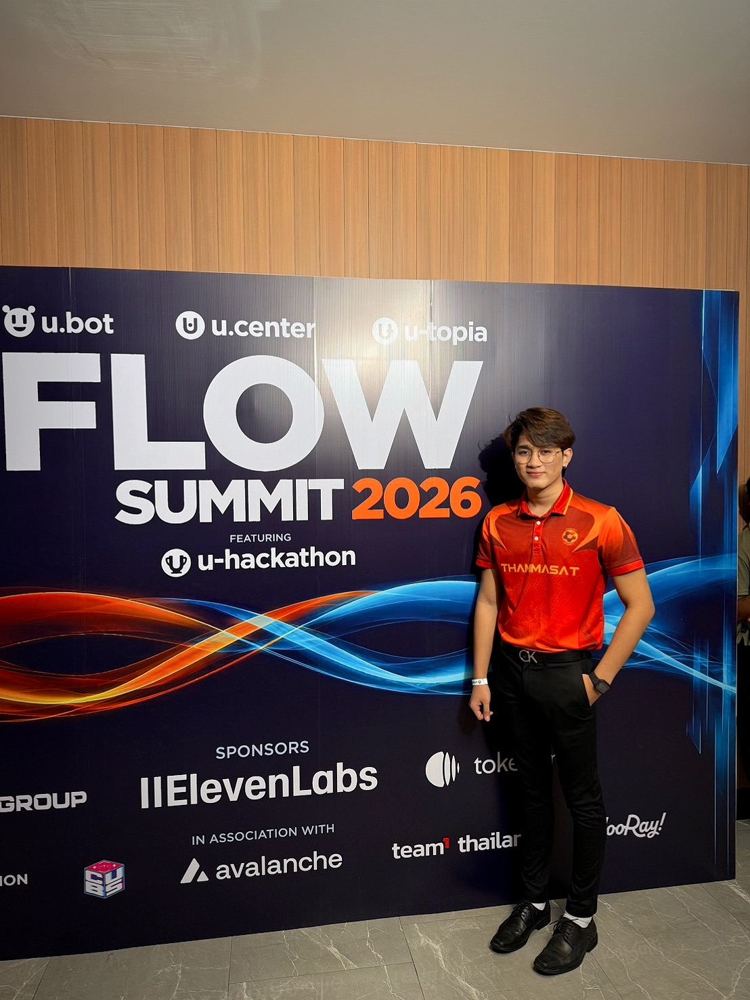
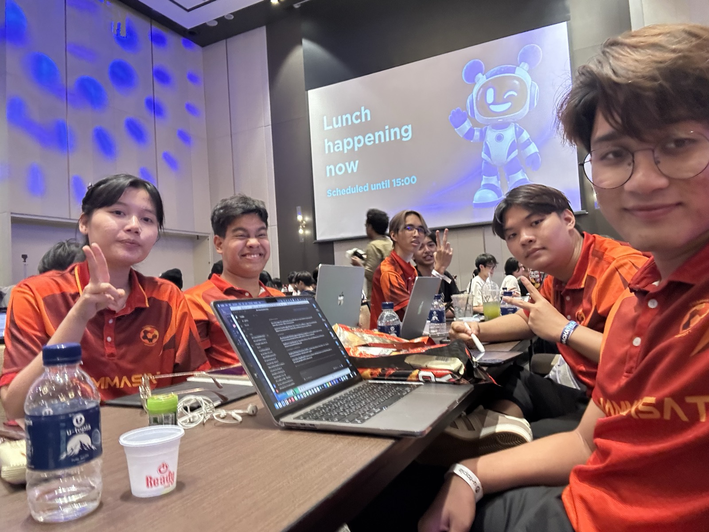
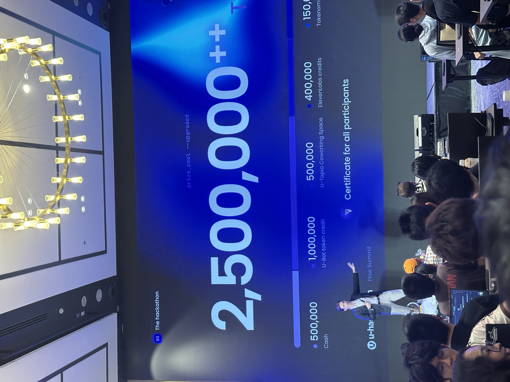
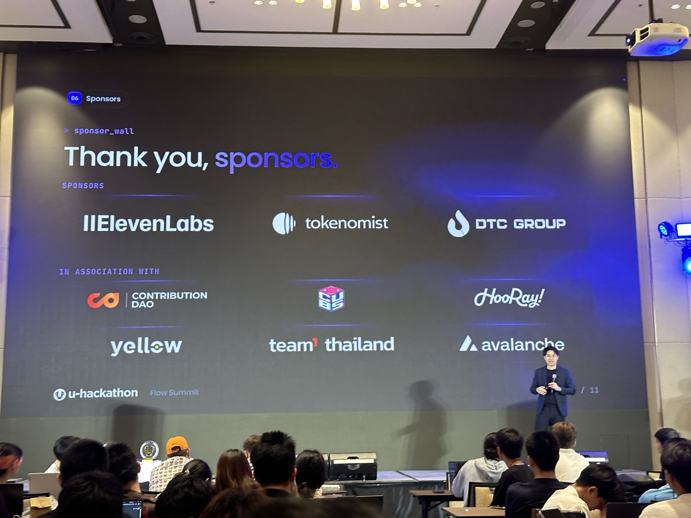
Oct 12–16
2026
2026
October 12–16, 2026
01 / EVENT / 42 BANGKOK 02 / HANDS-ON LEARNING 03 / PEER LEARNING 04 / WEB PROGRAMMING 05 / CERTIFICATE
Discovery Piscine — Web Programming Essentials
42 Bangkok · KLCC 4F HTML · CSS · JavaScript · Shell- Took part in a five-day web development bootcamp, learning through hands-on exercises and building websites.
- Practiced structuring web pages with HTML, styling layouts with CSS, adding interactive features with JavaScript, and using basic Shell commands.
- Strengthened programming fundamentals, debugging skills, and the ability to connect individual concepts into a working website.
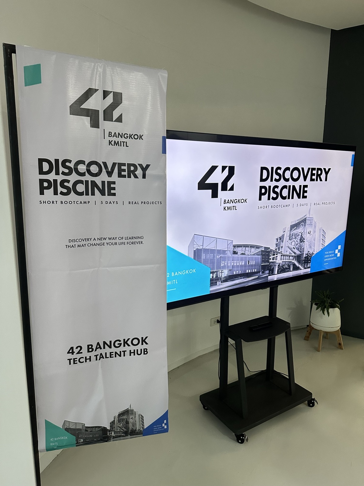
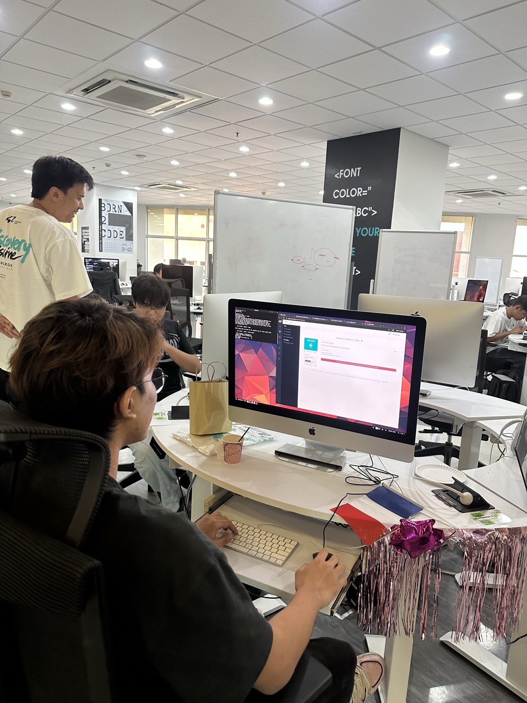
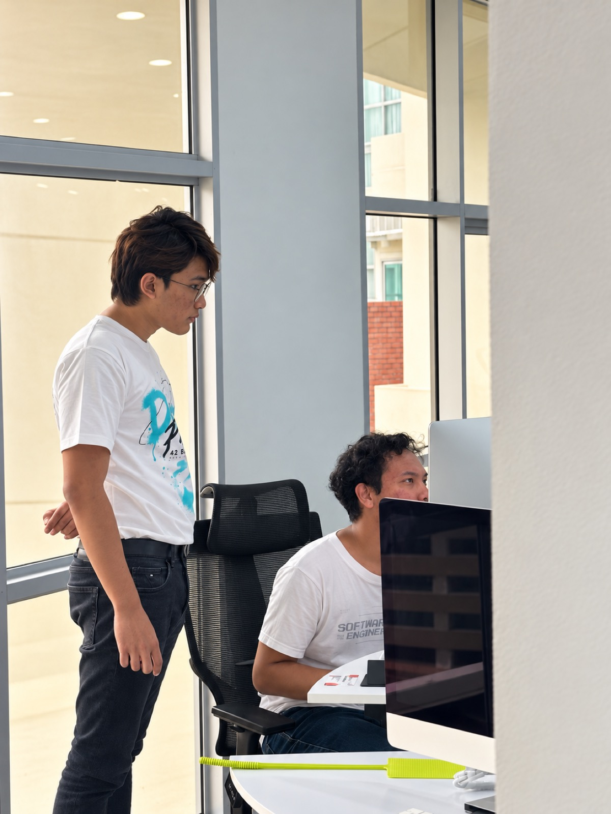
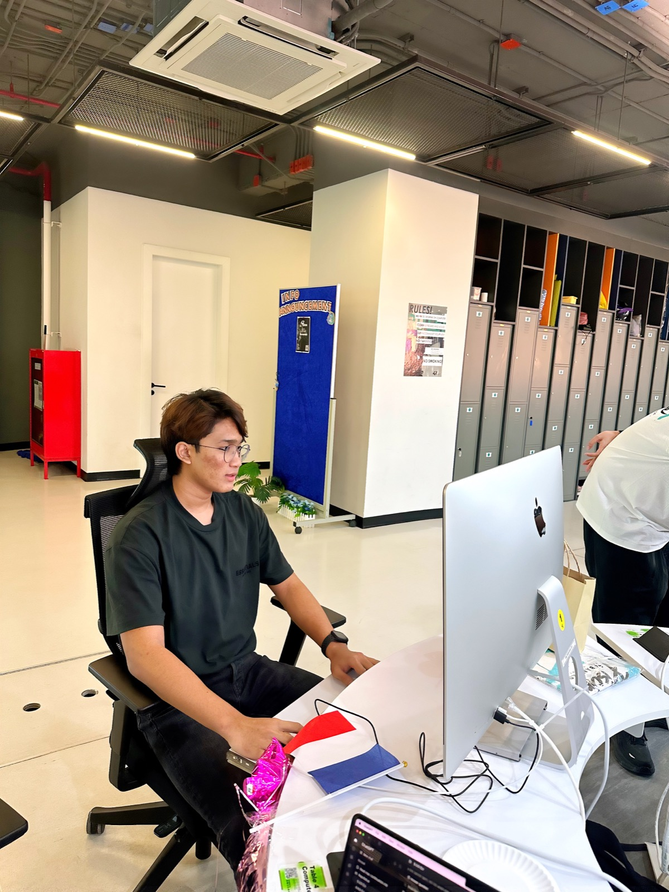
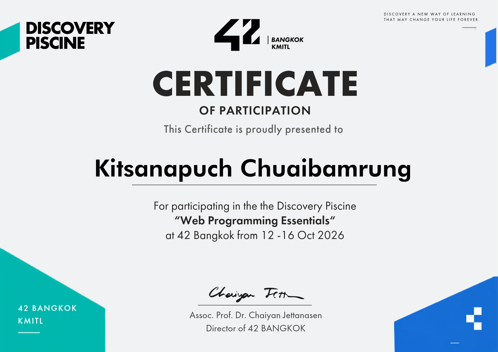
Sep 25
2026
2026
September 25, 2026
01 / TECH TALKS 02 / TECH TALKS 
03 / TECH TALKS 
04 / TECH TALKS 05 / TECH TALKS
TECH TALKS 2026 — 3rd Edition
LINE MAN Wongnai- Attended technical sessions focused on real-world software engineering challenges and solutions.
- Learned about iOS E2E automation, multi-simulator testing, and Android UI automation.
- Gained insights into software testing practices, automation tools, and quality improvement from professional Software Engineers.
- Expanded understanding of how software engineering teams apply automation and testing in real-world development environments.
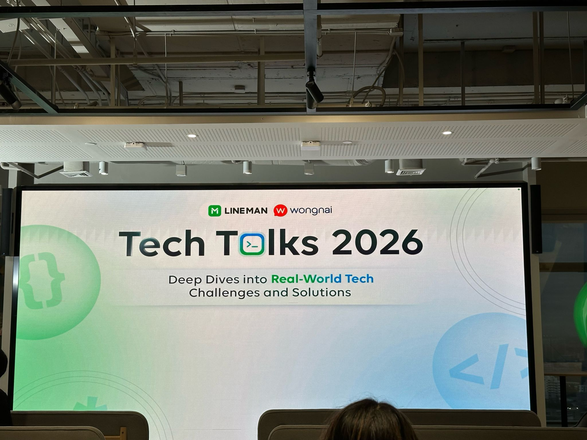
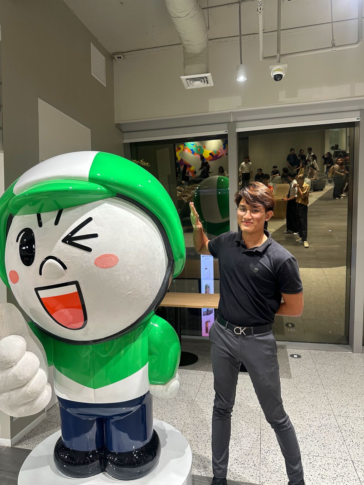
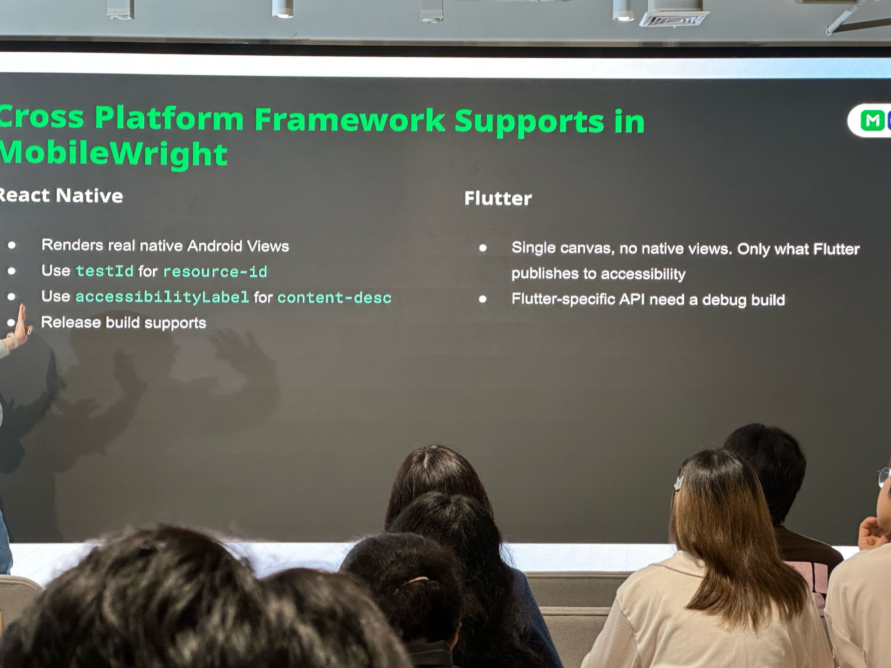
Sep 4
2026
2026
September 4, 2026

View original LinkedIn post ↗
AI Experience — Campus Roadshow 2026
Thammasat University- Participated in an AI workshop and explored real-world AI applications.
- Gained hands-on experience and insights into emerging AI trends and applications.
- Exchanged ideas with technology enthusiasts and expanded perspectives on AI and innovation.
Sep
2026
2026
September 2026

High-Impact Communication · True LAB @ Thammasat
High-Impact Communication for Work & Life
True LAB @ Thammasat · Thammasat University- Participated in a communication workshop focused on effective speaking, active listening, and interpersonal communication.
- Developed skills in presenting ideas clearly, exchanging perspectives, and collaborating effectively with others.
- Strengthened communication and teamwork skills applicable to academic and professional environments.